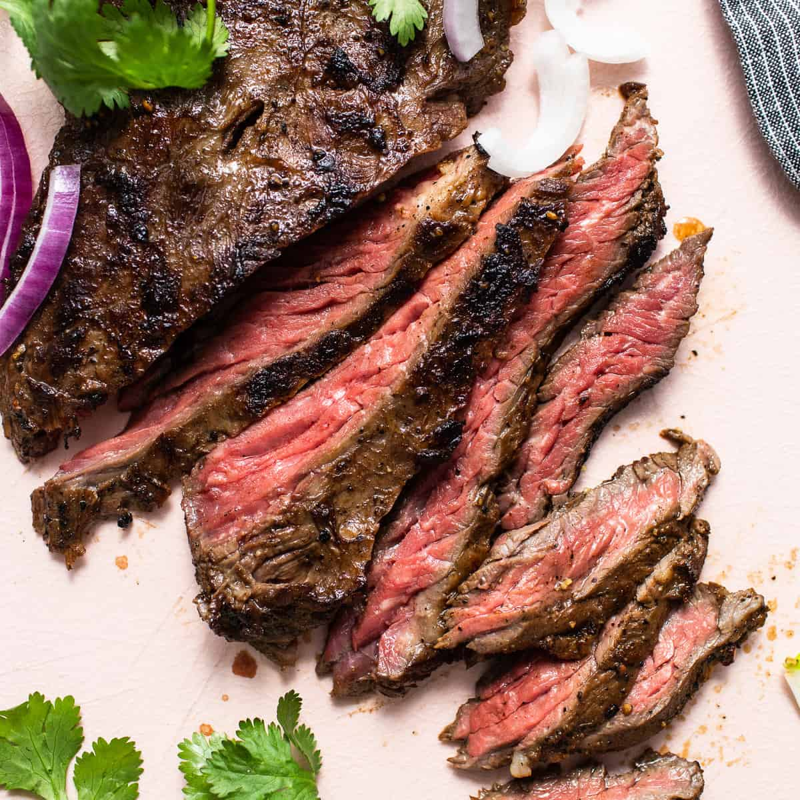

Skirt Steak

A quick and easy steak sure to rival your favorite restaurant!
Ingredients
- Skirt steak
- Butter
- Garlic
- Thyme
Steps
- Season steak with salt and pepper.
- Pre-heat a cast iron skillet with thyme and garlic until smoking.
- Place the steak in the skillet and sear for 2 minutes a side.
- Melt butter and baste the steak well until medium rare.
- Remove and let rest for 10 minutes before slicing.
- Serve over your favorite side and enjoy!